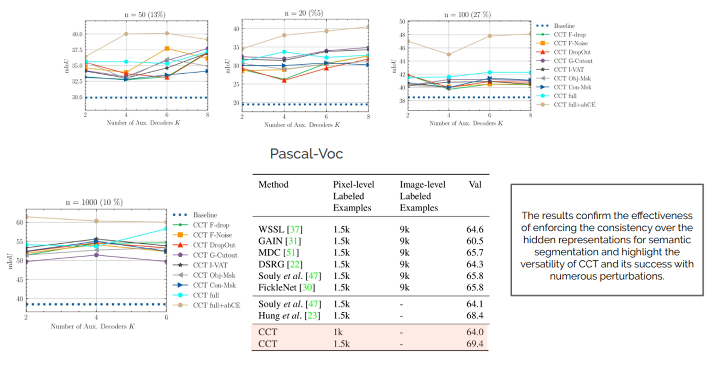
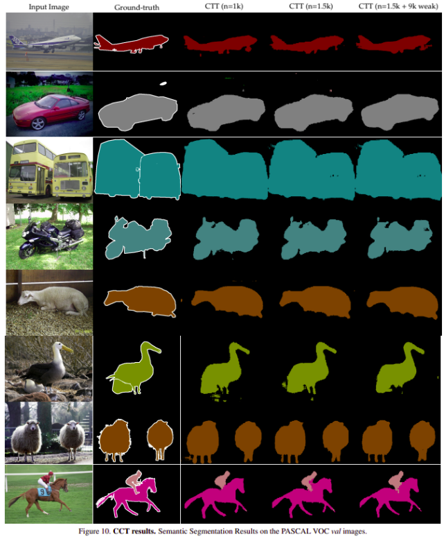

[Draft] CCT - CVPR 2020¶
Title: Semi-Supervised Semantic Segmentation with Cross-Consistency Training
Review By: Chanmin Park
Edited by: Taeyup Song
Reference¶
paper : https://arxiv.org/abs/2003.09005
Problem Statement¶
Semantic segmentation을 위해서는 pixel level의 labels이 필요하지만, 수 많은 unlabeled data가 존재하는 것에 반해 labeled data는 부족한 문제가 있음
Semi-supervised learning 기반 semantic segmentation을 위해 어떤 augmentation을 가했을 때 network의 output이 변하지 않는 일관성(consistency)을 이용하여 unlabeled data와 labeled data를 모두 이용하여 학습하는 framework이 제안되었음.
하지만 기존 consistency training 기법은 input에 대해 작은 perturbations을 추가하여 작은 변화에 잘 대응되도록 학습함. 이는 학습의 efficiency를 감소시키고, 다른 task에 적용하기 위해 전체적인 구조를 변경해야하는 문제가 있었음.
Contribution¶
Encoder의 output에 다양한 perturbations를 주입하고, prediction 결과의 변동을 제한하는 cross-consistency training framework을 제안함.
{kind=link}
다양한 큰 수정없이 task에 적용가능
Background¶
1. CowMix¶
Semi-supervised semantic segmentation needs strong, varied perturbations. BMVC 20
{kind=link}
Cluster assumption을 만족하지 못함을 극복하기 위해 high-dimensional perturbation으로써 MixUp을 사용함.
매 training iteration마다 multiple forward passes거처야 함.
CowMix를 다른 setting (e.g., over multiple domains, using weak labels) 상당히 많은 수정이 필요.
2. Cluster assumption¶
만약 어떤 data들이 같은 cluster에 포함된다면, 같은 class를 가질 가능성이 높음
Proposed Method¶
1. Cross-Consistency Training¶
{kind=link}
Fig 3. Illustration of our approach
Loss는 labeled pixel과 unlabeled pixel에 대한 loss의 합으로 구성.
\[\mathcal{L}=\mathcal{L}_s+\mathcal{w}_u\mathcal{L}_u\]Labeled data를 이용하여 학습하는 main decoder에 적용되는 supervised loss \(\mathcal{L}_s\)은 cross-entrophy loss 사용
\[\mathcal{L}_s=\frac{1}{|\mathcal{D}_l|}\sum_{\mathbf{x}^l_i, y_i\in\mathcal{D}_l}\mathbf{H}(y_i,f(\mathbf{x}_i^l))\]overfitting을 방지하기 위해 bootstrapped cross-entrophy 적용 (output probability가 \(\eta\)보다 작은 경우에만 supervised loss를 계산함.
\[\mathcal{L}_s=\frac{1}{|\mathcal{D}_l|}\sum_{\mathbf{x}^l_i, y_i\in\mathcal{D}_l}\{f(\mathbf{x}_{i}^{l}<\eta\}_{\mathbf{1}}\mathbf{H}(y_i,f(\mathbf{x}_i^l))\]Unlabeled data를 이용하여 학습하는 aux. decoder에 적용되는 unsupervised loss \(\mathcal{L}_u\)은 Mean square error를 사용
\[\mathcal{L}_u=\frac{1}{|\mathcal{D}_u|}\frac{1}{K}\sum_{\mathbf{x}_i^u\in\mathcal{D}_u}\sum_{k=1}^{K}\mathbf{d}(g(\mathbf{z}_i),g_a^k(\mathbf{z}_i))\]
2. Perturbation functions¶
Feature based perturbation\(\mathcal{}\)
prediction based perturbations
3. Exploiting weak-labels¶
CCT can be easily extended to multiple domains with partially or fully non-overlapping label spaces
Experimental Result¶
1. Training policy¶
poly learning rate
Dataset
PASCAL VOC (21 classes)
Cityscapes (19 classes)
SUN RGB-D (13 classes)
Cam Vid (11 classes)
Evaluation
mIoU
2. Experimental Result¶
 Conclusion¶
Present cross-consistency training (CCT), a simple, efficient and flexible method for a consistency based semi-supervised semantic segmentation
The effectiveness of CCT in other visual tasks and learning settings, such as unsupervised domain adaptation.